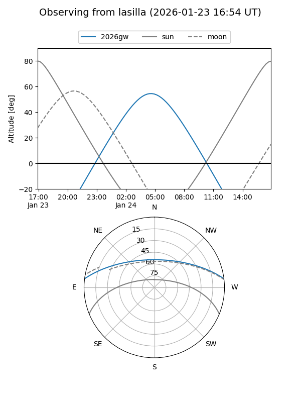
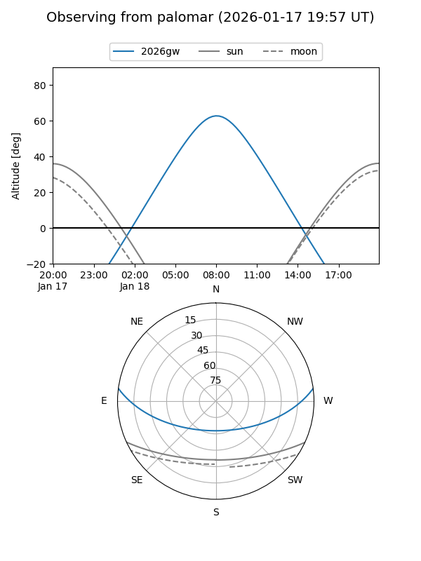
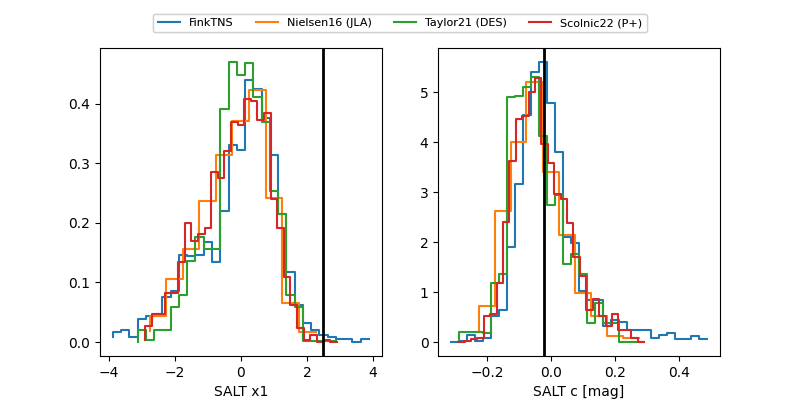

2026gw
Target 2026gw at 2026-01-22 18:15
Aliases and brokers:
FINK: link
Lasair: link
ALeRCE: link
TNS: link
YSE: link
alt names
ZTF25aclbwly (ztf,fink_ztf)
2026gw (tns,yse)
ATLAS26acl (atlas)
PS26ij (panstarrs)
Coordinates:
equatorial (ra, dec) = 120.9342,+6.25412
equatorial (HMS+DMS) = 08:03:44.21,+06:15:14.82
galactic (l, b) = (215.5782,+18.91446)
Flags:
Photometry:
last ztfg=19.97, ztfr=19.75
3 ztfg, 5 ztfr detections
Lightcurve

Visibility


Additional plots
